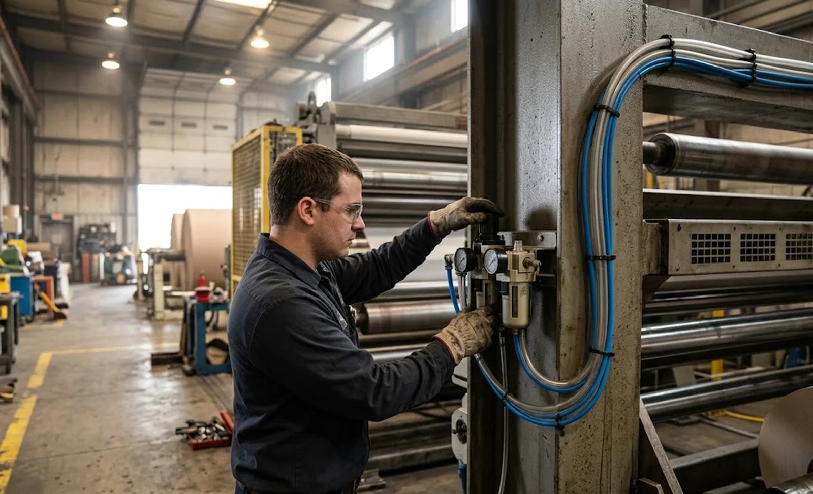

Published October 14, 2026 | By HDPTH Technical Editorial Team

Ask a supplier how much compressed air their slitter rewinder uses and many answers are guesses. That is a problem worth money twice over. First, undersized plant air systems surface only after commissioning, when knife holders clamp weakly and changeovers stall. Second, compressed air is one of the most expensive utilities per unit of energy delivered — generating and distributing it can cost ten times more than an equivalent direct electric drive. A buyer who treats air consumption as a specification buys a line that runs correctly on day one and costs less for years.
Where the air goes on a slitter rewinder
Pneumatic consumers divide into steady and peak loads. Steady loads include air-bearing or air-cushion elements, web cleaning nozzles and purge air for panels; these run whenever the machine runs. Peak loads arrive at changeover and fault recovery: unload arm travel, splice table clamping, core loading, pneumatic brake engagement and knife-holder repositioning. Because peak flows can exceed running consumption several times over, sizing a compressor on the average figure alone is a classic commissioning-day failure. The utility requirements guide shows where air belongs in the wider site preparation picture; this guide focuses on the numbers themselves.
The three numbers every datasheet should state
Consumption. Average flow and peak flow, in Nm³/min or scfm, referenced to a stated pressure. A typical mid-size slitter rewinder draws roughly 0.2–1.5 Nm³/min averaged, with changeover peaks well above that. Quality. The ISO 8573-1 class the machine needs — typically Class 2–3 particles, Class 3–4 dew point (−20 °C for general plants, −40 °C for cold or humid sites or hygienic applications such as cleanroom and hygienic design machines) and Class 2 oil. Pressure. The minimum inlet pressure at which all functions work as specified, commonly 6 bar with 7–8 bar recommended at the header. A supplier who states all three has engineered the pneumatics; a supplier who does not is asking you to discover the design by experiment. Context for where these figures sit in the wider datasheet appears in our spec sheet reading guide.
| Air consumer | Load type | Why it matters to quality |
|---|---|---|
| Pneumatic knife holders | Steady + peak at setup | Low pressure = low clamping force = burrs and wander |
| Core chucks / shafts | Steady under torque | Slipping chucks cause telescoping and core spin |
| Unload / core-load arms | Peak at cycles | Slow motion stalls cycle times at changeover |
| Splice table & threading | Peak at events | Aborted sequences waste web and time |
| Web cleaning nozzles | Steady while running | Dust on the web contaminates finished rolls |
FRL, dew point and the plumbing you specify
Filters at the machine inlet are the interface between your air system and the machine’s warranty: sized for the real flow, with a regulator set to the datasheet pressure, and — importantly — a lubricator only where the manufacturer calls for lubricated air, since many modern valves and cylinders are designed for dry, oil-free air and lubricant shortens their life. Downstream, the machine should stop in a controlled way with a clear alarm when inlet pressure falls below minimum, instead of silently producing defects. Pneumatic upkeep routines are covered in our pneumatic system maintenance guide; the purchase specification decides whether the system is healthy to begin with.
Sizing the compressor and controlling lifetime cost
Sizing follows a simple arithmetic once consumption figures exist: sum the average consumption of every machine, add a simultaneity factor so simultaneous changeover peaks are covered, add 15–20 percent for leakage and growth, and size the receiver tank to buffer peaks. For a typical two-line converting plant, the slitter rewinder’s share lands around 1–3 kW of compressor power — modest, until leaks double it. Leak surveys, drop-leg drains and fixing quick-coupling wear recover more energy than any compressor upgrade; the wider energy arithmetic is extended in our energy efficiency guide. Finally, write air into acceptance: at FAT, confirm the machine holds its specified pressure band at production speed, as the factory acceptance test checklist structures other items.
Specifying your next slitter rewinder?
Tell HDPTH your material, line speed and available plant air. We state consumption, peak flow and air quality class on the datasheet, ship with a correctly specified FRL, and verify pressure behaviour at FAT — so your compressor is sized once, correctly, for the life of the line.
Submit Your Project InquiryFrequently asked questions
How much compressed air does a slitter rewinder consume?
It depends on pneumatics duty: knife-holder actuation, unload arms, splice tables, core clamping and web cleaning together typically draw from about 0.2 to 1.5 cubic metres per minute of free air, with short peak flows at changeover that can exceed running consumption several times over. Demand a stated consumption figure in Nm³/min or scfm at a reference pressure, plus the peak flow and duty profile, from every supplier so compressor sizing is based on data instead of guesses.
What air quality should we supply to a slitter rewinder?
Most converting pneumatics run well on ISO 8573-1 Class 2–3 particles, Class 3–4 dew point (down to −20 °C for general plants, −40 °C for cold or humid sites) and Class 2 oil content. What matters is that the machine datasheet states the required class and that a filter–regulator–lubricator unit is installed at the machine inlet — with the lubricator only where the manufacturer actually calls for lubricated air, since many modern valves prefer dry, oil-free air.
What happens if supply pressure drops below specification?
Below the minimum pressure, pneumatic knife holders lose clamping force and cut quality degrades before the machine alarms; core chucks slip, causing roll telescoping; unload arms move slowly and splice sequences abort. Design the air system so the machine inlet holds the datasheet minimum under worst-case simultaneous demand, and ask the supplier to define the low-pressure behaviour: a controlled stop with clear alarms, not silent quality drift.
How do we size the compressor for a new converting line?
Add the stated average consumption of every machine, apply a simultaneity factor for peak events such as changeovers, add 15–20 percent for leakage and future growth, and size the receiver so peak flows are buffered. For a typical two-line converting plant this lands the slitter rewinder’s share around 1–3 kW of compressor power, which makes air a real but modest line item — provided leaks are controlled.
Should air consumption appear in the machine specification and FAT?
Yes. Require stated consumption and peak flow at a reference pressure in the datasheet, minimum inlet pressure in the utility requirements, and at FAT a brief running test confirming the machine holds its specified pressure band at production speed. Over the machine’s life, compressed air costs several times the price of the pneumatics that use it, so the specification is where that lifetime cost is decided.